-
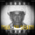
-

-
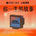

-
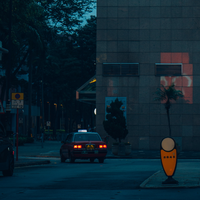
复古电台
用音乐一起造梦
-
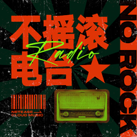
不摇滚电台
听见音乐，走过山河
-
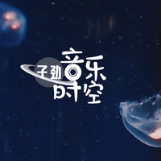
子劲音乐时空
穿越进不同的音乐世界
-
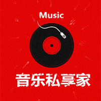
音乐私享家
最热音乐娱乐热点
-
沉浸式流金电台丨治愈时刻
沉浸式氛围空间
-
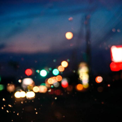
晚安电台 | 氛围音乐 白噪音
深夜白噪音歌单
-
童话冥想：御姐音 | 一听就困 不再失眠
御姐音治愈你的失眠
-
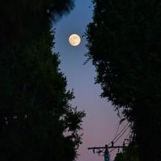
助眠氛围轻音推荐
氛围轻音&助眠&学习&解压
-
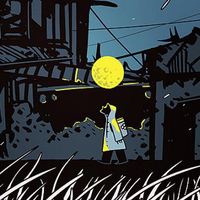
【正太音】经典人生故事
听正太音讲人生故事
-
平凡的时间里
记录细碎过往和微小爱意
-
失眠城市——陪你一起等天明
用温暖的声音治愈你
-
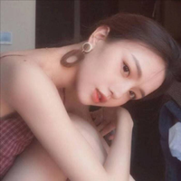
人间太匆匆
所有的感情都来自于偏爱
-
爱抽烟屁的彦祖
用音乐一起造梦
-
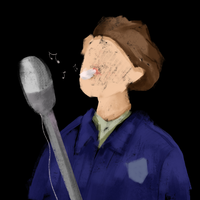
顔人中的隔壁小窝
住在你家隔壁，吵闹的唱歌男孩
-
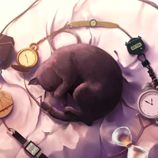
王巨星的电台
你一定会爱上的惊艳男声翻唱
-
网瘾少女叽
元气少女唱好听的歌送给你